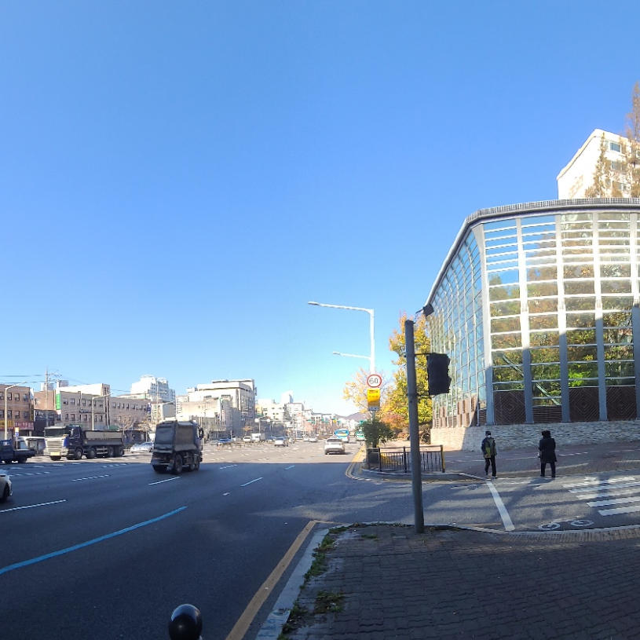
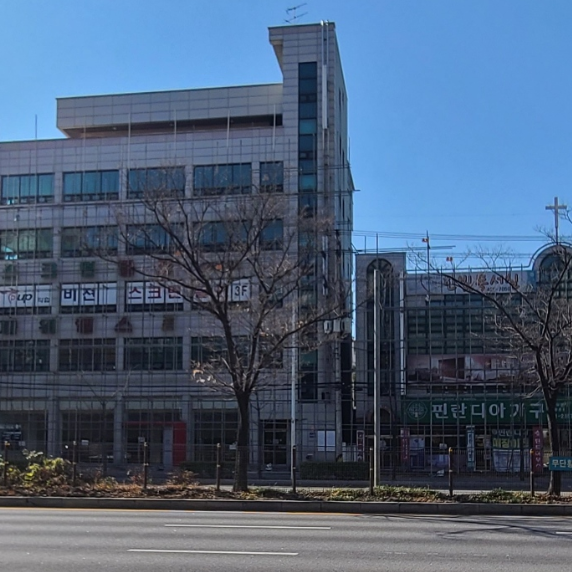
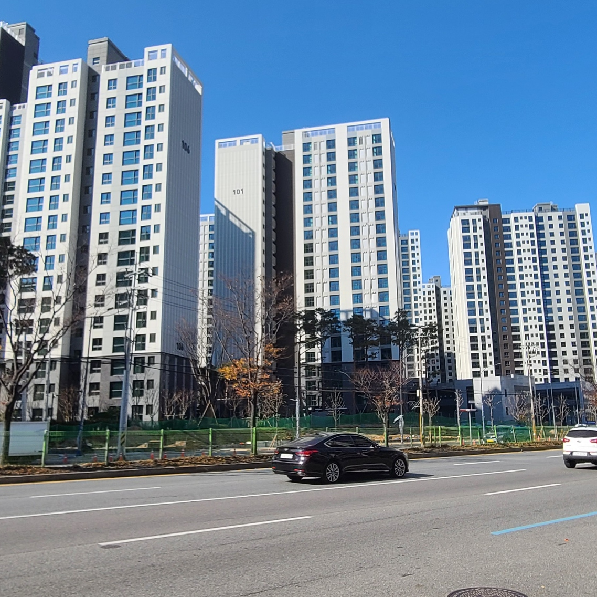

하지만 이러한 구도심 건물들이 낡았다는 것은 이제 곧 사실이 아니게 될 것입니다.

낡아 보이고, 사람이 없어보이는 건물들에는 어느덧 철거를 위한 구조물들이 함께 놓여 있습니다.

조금씩, 조금씩 재개발이 시작되는 듯한 모습들을 보이고 있습니다. 어떤 곳에서는 이미 새로운 아파트가 들어서 입주를 준비하고 있네요.
지금까지와 반대로, 이제 새로운 자금이 더 들어가게 될 곳은 분명 재개발 연한이 다가온 구도심 지역이리라 생각됩니다. 우리는 또다시 경계가 강화되는 장면을 보게될까요?

현대 사회에서 경계와 차이가 사라지는 것은 불가능한 일이 되어버렸을 수도 있습니다. 우리는 이를 인정하고 사회의 분배가 올바르게 일어날 수 있도록 하는 공존의 자세를 보아야 할 것입니다.